一. NIO 基础
non-blocking io 非阻塞 IO
1. 三大组件
1.1 Channel & Buffer
channel 有一点类似于 stream，它就是读写数据的双向通道，可以从 channel 将数据读入 buffer，也可以将 buffer 的数据写入 channel，而之前的 stream 要么是输入，要么是输出，channel 比 stream 更为底层
graph LR
channel --> buffer
buffer --> channel
常见的 Channel 有
- FileChannel
- DatagramChannel
- SocketChannel
- ServerSocketChannel
buffer 则用来缓冲读写数据，常见的 buffer 有
- ByteBuffer
- MappedByteBuffer
- DirectByteBuffer
- HeapByteBuffer
- ShortBuffer
- IntBuffer
- LongBuffer
- FloatBuffer
- DoubleBuffer
- CharBuffer
1.2 Selector
selector 单从字面意思不好理解，需要结合服务器的设计演化来理解它的用途
多线程版设计
graph TD
subgraph 多线程版
t1(thread) --> s1(socket1)
t2(thread) --> s2(socket2)
t3(thread) --> s3(socket3)
end
⚠️ 多线程版缺点
- 内存占用高
- 线程上下文切换成本高
- 只适合连接数少的场景
线程池版设计
graph TD
subgraph 线程池版
t4(thread) --> s4(socket1)
t5(thread) --> s5(socket2)
t4(thread) -.-> s6(socket3)
t5(thread) -.-> s7(socket4)
end
⚠️ 线程池版缺点
- 阻塞模式下，线程仅能处理一个 socket 连接
- 仅适合短连接场景
selector 版设计
selector 的作用就是配合一个线程来管理多个 channel，获取这些 channel 上发生的事件，这些 channel 工作在非阻塞模式下，不会让线程吊死在一个 channel 上。适合连接数特别多，但流量低的场景（low traffic）
graph TD
subgraph selector 版
thread --> selector
selector --> c1(channel)
selector --> c2(channel)
selector --> c3(channel)
end
调用 selector 的 select() 会阻塞直到 channel 发生了读写就绪事件，这些事件发生，select 方法就会返回这些事件交给 thread 来处理
2. ByteBuffer
有一普通文本文件 data.txt，内容为
1234567890abcd
使用 FileChannel 来读取文件内容
@Slf4j
public class ChannelDemo1 {
public static void main(String[] args) {
try (RandomAccessFile file = new RandomAccessFile("helloword/data.txt", "rw")) {
FileChannel channel = file.getChannel();
ByteBuffer buffer = ByteBuffer.allocate(10);
do {
// 向 buffer 写入
int len = channel.read(buffer);
log.debug("读到字节数：{}", len);
if (len == -1) {
break;
}
// 切换 buffer 读模式
buffer.flip();
while(buffer.hasRemaining()) {
log.debug("{}", (char)buffer.get());
}
// 切换 buffer 写模式
buffer.clear();
} while (true);
} catch (IOException e) {
e.printStackTrace();
}
}
}
输出
10:39:03 [DEBUG] [main] c.i.n.ChannelDemo1 - 读到字节数：10
10:39:03 [DEBUG] [main] c.i.n.ChannelDemo1 - 1
10:39:03 [DEBUG] [main] c.i.n.ChannelDemo1 - 2
10:39:03 [DEBUG] [main] c.i.n.ChannelDemo1 - 3
10:39:03 [DEBUG] [main] c.i.n.ChannelDemo1 - 4
10:39:03 [DEBUG] [main] c.i.n.ChannelDemo1 - 5
10:39:03 [DEBUG] [main] c.i.n.ChannelDemo1 - 6
10:39:03 [DEBUG] [main] c.i.n.ChannelDemo1 - 7
10:39:03 [DEBUG] [main] c.i.n.ChannelDemo1 - 8
10:39:03 [DEBUG] [main] c.i.n.ChannelDemo1 - 9
10:39:03 [DEBUG] [main] c.i.n.ChannelDemo1 - 0
10:39:03 [DEBUG] [main] c.i.n.ChannelDemo1 - 读到字节数：4
10:39:03 [DEBUG] [main] c.i.n.ChannelDemo1 - a
10:39:03 [DEBUG] [main] c.i.n.ChannelDemo1 - b
10:39:03 [DEBUG] [main] c.i.n.ChannelDemo1 - c
10:39:03 [DEBUG] [main] c.i.n.ChannelDemo1 - d
10:39:03 [DEBUG] [main] c.i.n.ChannelDemo1 - 读到字节数：-1
2.1 ByteBuffer 正确使用姿势
- 向 buffer 写入数据，例如调用 channel.read(buffer)
- 调用 flip() 切换至读模式
- 从 buffer 读取数据，例如调用 buffer.get()
- 调用 clear() 或 compact() 切换至写模式
- 重复 1~4 步骤
2.2 ByteBuffer 结构
ByteBuffer 有以下重要属性
- capacity
- position
- limit
一开始
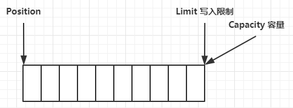
写模式下，position 是写入位置，limit 等于容量，下图表示写入了 4 个字节后的状态
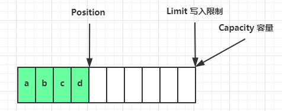
flip 动作发生后，position 切换为读取位置，limit 切换为读取限制
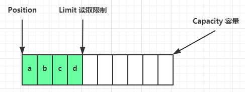
读取 4 个字节后，状态
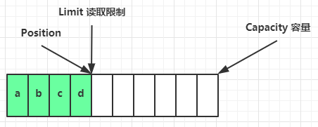
clear 动作发生后，状态
compact 方法，是把未读完的部分向前压缩，然后切换至写模式
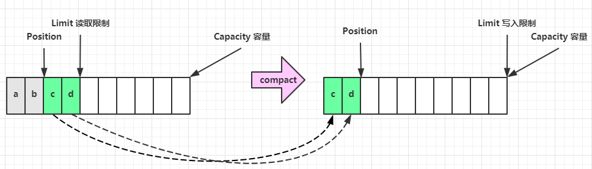
💡 调试工具类
public class ByteBufferUtil {
private static final char[] BYTE2CHAR = new char[256];
private static final char[] HEXDUMP_TABLE = new char[256 * 4];
private static final String[] HEXPADDING = new String[16];
private static final String[] HEXDUMP_ROWPREFIXES = new String[65536 >>> 4];
private static final String[] BYTE2HEX = new String[256];
private static final String[] BYTEPADDING = new String[16];
static {
final char[] DIGITS = "0123456789abcdef".toCharArray();
for (int i = 0; i < 256; i++) {
HEXDUMP_TABLE[i << 1] = DIGITS[i >>> 4 & 0x0F];
HEXDUMP_TABLE[(i << 1) + 1] = DIGITS[i & 0x0F];
}
int i;
// Generate the lookup table for hex dump paddings
for (i = 0; i < HEXPADDING.length; i++) {
int padding = HEXPADDING.length - i;
StringBuilder buf = new StringBuilder(padding * 3);
for (int j = 0; j < padding; j++) {
buf.append(" ");
}
HEXPADDING[i] = buf.toString();
}
// Generate the lookup table for the start-offset header in each row (up to 64KiB).
for (i = 0; i < HEXDUMP_ROWPREFIXES.length; i++) {
StringBuilder buf = new StringBuilder(12);
buf.append(NEWLINE);
buf.append(Long.toHexString(i << 4 & 0xFFFFFFFFL | 0x100000000L));
buf.setCharAt(buf.length() - 9, '|');
buf.append('|');
HEXDUMP_ROWPREFIXES[i] = buf.toString();
}
// Generate the lookup table for byte-to-hex-dump conversion
for (i = 0; i < BYTE2HEX.length; i++) {
BYTE2HEX[i] = ' ' + StringUtil.byteToHexStringPadded(i);
}
// Generate the lookup table for byte dump paddings
for (i = 0; i < BYTEPADDING.length; i++) {
int padding = BYTEPADDING.length - i;
StringBuilder buf = new StringBuilder(padding);
for (int j = 0; j < padding; j++) {
buf.append(' ');
}
BYTEPADDING[i] = buf.toString();
}
// Generate the lookup table for byte-to-char conversion
for (i = 0; i < BYTE2CHAR.length; i++) {
if (i <= 0x1f || i >= 0x7f) {
BYTE2CHAR[i] = '.';
} else {
BYTE2CHAR[i] = (char) i;
}
}
}
/**
* 打印所有内容
* @param buffer
*/
public static void debugAll(ByteBuffer buffer) {
int oldlimit = buffer.limit();
buffer.limit(buffer.capacity());
StringBuilder origin = new StringBuilder(256);
appendPrettyHexDump(origin, buffer, 0, buffer.capacity());
System.out.println("+--------+-------------------- all ------------------------+----------------+");
System.out.printf("position: [%d], limit: [%d]\n", buffer.position(), oldlimit);
System.out.println(origin);
buffer.limit(oldlimit);
}
/**
* 打印可读取内容
* @param buffer
*/
public static void debugRead(ByteBuffer buffer) {
StringBuilder builder = new StringBuilder(256);
appendPrettyHexDump(builder, buffer, buffer.position(), buffer.limit() - buffer.position());
System.out.println("+--------+-------------------- read -----------------------+----------------+");
System.out.printf("position: [%d], limit: [%d]\n", buffer.position(), buffer.limit());
System.out.println(builder);
}
private static void appendPrettyHexDump(StringBuilder dump, ByteBuffer buf, int offset, int length) {
if (isOutOfBounds(offset, length, buf.capacity())) {
throw new IndexOutOfBoundsException(
"expected: " + "0 <= offset(" + offset + ") <= offset + length(" + length
+ ") <= " + "buf.capacity(" + buf.capacity() + ')');
}
if (length == 0) {
return;
}
dump.append(
" +-------------------------------------------------+" +
NEWLINE + " | 0 1 2 3 4 5 6 7 8 9 a b c d e f |" +
NEWLINE + "+--------+-------------------------------------------------+----------------+");
final int startIndex = offset;
final int fullRows = length >>> 4;
final int remainder = length & 0xF;
// Dump the rows which have 16 bytes.
for (int row = 0; row < fullRows; row++) {
int rowStartIndex = (row << 4) + startIndex;
// Per-row prefix.
appendHexDumpRowPrefix(dump, row, rowStartIndex);
// Hex dump
int rowEndIndex = rowStartIndex + 16;
for (int j = rowStartIndex; j < rowEndIndex; j++) {
dump.append(BYTE2HEX[getUnsignedByte(buf, j)]);
}
dump.append(" |");
// ASCII dump
for (int j = rowStartIndex; j < rowEndIndex; j++) {
dump.append(BYTE2CHAR[getUnsignedByte(buf, j)]);
}
dump.append('|');
}
// Dump the last row which has less than 16 bytes.
if (remainder != 0) {
int rowStartIndex = (fullRows << 4) + startIndex;
appendHexDumpRowPrefix(dump, fullRows, rowStartIndex);
// Hex dump
int rowEndIndex = rowStartIndex + remainder;
for (int j = rowStartIndex; j < rowEndIndex; j++) {
dump.append(BYTE2HEX[getUnsignedByte(buf, j)]);
}
dump.append(HEXPADDING[remainder]);
dump.append(" |");
// Ascii dump
for (int j = rowStartIndex; j < rowEndIndex; j++) {
dump.append(BYTE2CHAR[getUnsignedByte(buf, j)]);
}
dump.append(BYTEPADDING[remainder]);
dump.append('|');
}
dump.append(NEWLINE +
"+--------+-------------------------------------------------+----------------+");
}
private static void appendHexDumpRowPrefix(StringBuilder dump, int row, int rowStartIndex) {
if (row < HEXDUMP_ROWPREFIXES.length) {
dump.append(HEXDUMP_ROWPREFIXES[row]);
} else {
dump.append(NEWLINE);
dump.append(Long.toHexString(rowStartIndex & 0xFFFFFFFFL | 0x100000000L));
dump.setCharAt(dump.length() - 9, '|');
dump.append('|');
}
}
public static short getUnsignedByte(ByteBuffer buffer, int index) {
return (short) (buffer.get(index) & 0xFF);
}
}
2.3 ByteBuffer 常见方法
分配空间
可以使用 allocate 方法为 ByteBuffer 分配空间，其它 buffer 类也有该方法
Bytebuffer buf = ByteBuffer.allocate(16);
向 buffer 写入数据
有两种办法
- 调用 channel 的 read 方法
- 调用 buffer 自己的 put 方法
int readBytes = channel.read(buf);
和
buf.put((byte)127);
从 buffer 读取数据
同样有两种办法
- 调用 channel 的 write 方法
- 调用 buffer 自己的 get 方法
int writeBytes = channel.write(buf);
和
byte b = buf.get();
get 方法会让 position 读指针向后走，如果想重复读取数据
- 可以调用 rewind 方法将 position 重新置为 0
- 或者调用 get(int i) 方法获取索引 i 的内容，它不会移动读指针
mark 和 reset
mark 是在读取时，做一个标记，即使 position 改变，只要调用 reset 就能回到 mark 的位置
注意
rewind 和 flip 都会清除 mark 位置
字符串与 ByteBuffer 互转
ByteBuffer buffer1 = StandardCharsets.UTF_8.encode("你好");
ByteBuffer buffer2 = Charset.forName("utf-8").encode("你好");
debug(buffer1);
debug(buffer2);
CharBuffer buffer3 = StandardCharsets.UTF_8.decode(buffer1);
System.out.println(buffer3.getClass());
System.out.println(buffer3.toString());
输出
+-------------------------------------------------+
| 0 1 2 3 4 5 6 7 8 9 a b c d e f |
+--------+-------------------------------------------------+----------------+
|00000000| e4 bd a0 e5 a5 bd |...... |
+--------+-------------------------------------------------+----------------+
+-------------------------------------------------+
| 0 1 2 3 4 5 6 7 8 9 a b c d e f |
+--------+-------------------------------------------------+----------------+
|00000000| e4 bd a0 e5 a5 bd |...... |
+--------+-------------------------------------------------+----------------+
class java.nio.HeapCharBuffer
你好
⚠️ Buffer 的线程安全
Buffer 是非线程安全的
2.4 Scattering Reads
分散读取，有一个文本文件 3parts.txt
onetwothree
使用如下方式读取，可以将数据填充至多个 buffer
try (RandomAccessFile file = new RandomAccessFile("helloword/3parts.txt", "rw")) {
FileChannel channel = file.getChannel();
ByteBuffer a = ByteBuffer.allocate(3);
ByteBuffer b = ByteBuffer.allocate(3);
ByteBuffer c = ByteBuffer.allocate(5);
channel.read(new ByteBuffer[]{a, b, c});
a.flip();
b.flip();
c.flip();
debug(a);
debug(b);
debug(c);
} catch (IOException e) {
e.printStackTrace();
}
结果
+-------------------------------------------------+
| 0 1 2 3 4 5 6 7 8 9 a b c d e f |
+--------+-------------------------------------------------+----------------+
|00000000| 6f 6e 65 |one |
+--------+-------------------------------------------------+----------------+
+-------------------------------------------------+
| 0 1 2 3 4 5 6 7 8 9 a b c d e f |
+--------+-------------------------------------------------+----------------+
|00000000| 74 77 6f |two |
+--------+-------------------------------------------------+----------------+
+-------------------------------------------------+
| 0 1 2 3 4 5 6 7 8 9 a b c d e f |
+--------+-------------------------------------------------+----------------+
|00000000| 74 68 72 65 65 |three |
+--------+-------------------------------------------------+----------------+
2.5 Gathering Writes
使用如下方式写入，可以将多个 buffer 的数据填充至 channel
try (RandomAccessFile file = new RandomAccessFile("helloword/3parts.txt", "rw")) {
FileChannel channel = file.getChannel();
ByteBuffer d = ByteBuffer.allocate(4);
ByteBuffer e = ByteBuffer.allocate(4);
channel.position(11);
d.put(new byte[]{'f', 'o', 'u', 'r'});
e.put(new byte[]{'f', 'i', 'v', 'e'});
d.flip();
e.flip();
debug(d);
debug(e);
channel.write(new ByteBuffer[]{d, e});
} catch (IOException e) {
e.printStackTrace();
}
输出
+-------------------------------------------------+
| 0 1 2 3 4 5 6 7 8 9 a b c d e f |
+--------+-------------------------------------------------+----------------+
|00000000| 66 6f 75 72 |four |
+--------+-------------------------------------------------+----------------+
+-------------------------------------------------+
| 0 1 2 3 4 5 6 7 8 9 a b c d e f |
+--------+-------------------------------------------------+----------------+
|00000000| 66 69 76 65 |five |
+--------+-------------------------------------------------+----------------+
文件内容
onetwothreefourfive
2.6 练习
网络上有多条数据发送给服务端，数据之间使用 \n 进行分隔 但由于某种原因这些数据在接收时，被进行了重新组合，例如原始数据有3条为
- Hello,world\n
- I'm zhangsan\n
- How are you?\n
变成了下面的两个 byteBuffer (黏包，半包)
- Hello,world\nI'm zhangsan\nHo
- w are you?\n
现在要求你编写程序，将错乱的数据恢复成原始的按 \n 分隔的数据
public static void main(String[] args) {
ByteBuffer source = ByteBuffer.allocate(32);
// 11 24
source.put("Hello,world\nI'm zhangsan\nHo".getBytes());
split(source);
source.put("w are you?\nhaha!\n".getBytes());
split(source);
}
private static void split(ByteBuffer source) {
source.flip();
int oldLimit = source.limit();
for (int i = 0; i < oldLimit; i++) {
if (source.get(i) == '\n') {
System.out.println(i);
ByteBuffer target = ByteBuffer.allocate(i + 1 - source.position());
// 0 ~ limit
source.limit(i + 1);
target.put(source); // 从source 读，向 target 写
debugAll(target);
source.limit(oldLimit);
}
}
source.compact();
}
3. 文件编程
3.1 FileChannel
⚠️ FileChannel 工作模式
FileChannel 只能工作在阻塞模式下
获取
不能直接打开 FileChannel，必须通过 FileInputStream、FileOutputStream 或者 RandomAccessFile 来获取 FileChannel，它们都有 getChannel 方法
- 通过 FileInputStream 获取的 channel 只能读
- 通过 FileOutputStream 获取的 channel 只能写
- 通过 RandomAccessFile 是否能读写根据构造 RandomAccessFile 时的读写模式决定
读取
会从 channel 读取数据填充 ByteBuffer，返回值表示读到了多少字节，-1 表示到达了文件的末尾
int readBytes = channel.read(buffer);
写入
写入的正确姿势如下， SocketChannel
ByteBuffer buffer = ...;
buffer.put(...); // 存入数据
buffer.flip(); // 切换读模式
while(buffer.hasRemaining()) {
channel.write(buffer);
}
在 while 中调用 channel.write 是因为 write 方法并不能保证一次将 buffer 中的内容全部写入 channel
关闭
channel 必须关闭，不过调用了 FileInputStream、FileOutputStream 或者 RandomAccessFile 的 close 方法会间接地调用 channel 的 close 方法
位置
获取当前位置
long pos = channel.position();
设置当前位置
long newPos = ...;
channel.position(newPos);
设置当前位置时，如果设置为文件的末尾
- 这时读取会返回 -1
- 这时写入，会追加内容，但要注意如果 position 超过了文件末尾，再写入时在新内容和原末尾之间会有空洞（00）
大小
使用 size 方法获取文件的大小
强制写入
操作系统出于性能的考虑，会将数据缓存，不是立刻写入磁盘。可以调用 force(true) 方法将文件内容和元数据（文件的权限等信息）立刻写入磁盘
3.2 两个 Channel 传输数据
String FROM = "helloword/data.txt";
String TO = "helloword/to.txt";
long start = System.nanoTime();
try (FileChannel from = new FileInputStream(FROM).getChannel();
FileChannel to = new FileOutputStream(TO).getChannel();
) {
from.transferTo(0, from.size(), to);
} catch (IOException e) {
e.printStackTrace();
}
long end = System.nanoTime();
System.out.println("transferTo 用时：" + (end - start) / 1000_000.0);
输出
transferTo 用时：8.2011
超过 2g 大小的文件传输
public class TestFileChannelTransferTo {
public static void main(String[] args) {
try (
FileChannel from = new FileInputStream("data.txt").getChannel();
FileChannel to = new FileOutputStream("to.txt").getChannel();
) {
// 效率高，底层会利用操作系统的零拷贝进行优化
long size = from.size();
// left 变量代表还剩余多少字节
for (long left = size; left > 0; ) {
System.out.println("position:" + (size - left) + " left:" + left);
left -= from.transferTo((size - left), left, to);
}
} catch (IOException e) {
e.printStackTrace();
}
}
}
实际传输一个超大文件
position:0 left:7769948160
position:2147483647 left:5622464513
position:4294967294 left:3474980866
position:6442450941 left:1327497219
3.3 Path
jdk7 引入了 Path 和 Paths 类
- Path 用来表示文件路径
- Paths 是工具类，用来获取 Path 实例
Path source = Paths.get("1.txt"); // 相对路径 使用 user.dir 环境变量来定位 1.txt
Path source = Paths.get("d:\\1.txt"); // 绝对路径 代表了 d:\1.txt
Path source = Paths.get("d:/1.txt"); // 绝对路径 同样代表了 d:\1.txt
Path projects = Paths.get("d:\\data", "projects"); // 代表了 d:\data\projects
.代表了当前路径..代表了上一级路径
例如目录结构如下
d:
|- data
|- projects
|- a
|- b
代码
Path path = Paths.get("d:\\data\\projects\\a\\..\\b");
System.out.println(path);
System.out.println(path.normalize()); // 正常化路径
会输出
d:\data\projects\a\..\b
d:\data\projects\b
3.4 Files
检查文件是否存在
Path path = Paths.get("helloword/data.txt");
System.out.println(Files.exists(path));
创建一级目录
Path path = Paths.get("helloword/d1");
Files.createDirectory(path);
- 如果目录已存在，会抛异常 FileAlreadyExistsException
- 不能一次创建多级目录，否则会抛异常 NoSuchFileException
创建多级目录用
Path path = Paths.get("helloword/d1/d2");
Files.createDirectories(path);
拷贝文件
Path source = Paths.get("helloword/data.txt");
Path target = Paths.get("helloword/target.txt");
Files.copy(source, target);
- 如果文件已存在，会抛异常 FileAlreadyExistsException
如果希望用 source 覆盖掉 target，需要用 StandardCopyOption 来控制
Files.copy(source, target, StandardCopyOption.REPLACE_EXISTING);
移动文件
Path source = Paths.get("helloword/data.txt");
Path target = Paths.get("helloword/data.txt");
Files.move(source, target, StandardCopyOption.ATOMIC_MOVE);
- StandardCopyOption.ATOMIC_MOVE 保证文件移动的原子性
删除文件
Path target = Paths.get("helloword/target.txt");
Files.delete(target);
- 如果文件不存在，会抛异常 NoSuchFileException
删除目录
Path target = Paths.get("helloword/d1");
Files.delete(target);
- 如果目录还有内容，会抛异常 DirectoryNotEmptyException
遍历目录文件
public static void main(String[] args) throws IOException {
Path path = Paths.get("C:\\Program Files\\Java\\jdk1.8.0_91");
AtomicInteger dirCount = new AtomicInteger();
AtomicInteger fileCount = new AtomicInteger();
Files.walkFileTree(path, new SimpleFileVisitor<Path>(){
@Override
public FileVisitResult preVisitDirectory(Path dir, BasicFileAttributes attrs)
throws IOException {
System.out.println(dir);
dirCount.incrementAndGet();
return super.preVisitDirectory(dir, attrs);
}
@Override
public FileVisitResult visitFile(Path file, BasicFileAttributes attrs)
throws IOException {
System.out.println(file);
fileCount.incrementAndGet();
return super.visitFile(file, attrs);
}
});
System.out.println(dirCount); // 133
System.out.println(fileCount); // 1479
}
统计 jar 的数目
Path path = Paths.get("C:\\Program Files\\Java\\jdk1.8.0_91");
AtomicInteger fileCount = new AtomicInteger();
Files.walkFileTree(path, new SimpleFileVisitor<Path>(){
@Override
public FileVisitResult visitFile(Path file, BasicFileAttributes attrs)
throws IOException {
if (file.toFile().getName().endsWith(".jar")) {
fileCount.incrementAndGet();
}
return super.visitFile(file, attrs);
}
});
System.out.println(fileCount); // 724
删除多级目录
Path path = Paths.get("d:\\a");
Files.walkFileTree(path, new SimpleFileVisitor<Path>(){
@Override
public FileVisitResult visitFile(Path file, BasicFileAttributes attrs)
throws IOException {
Files.delete(file);
return super.visitFile(file, attrs);
}
@Override
public FileVisitResult postVisitDirectory(Path dir, IOException exc)
throws IOException {
Files.delete(dir);
return super.postVisitDirectory(dir, exc);
}
});
⚠️ 删除很危险
删除是危险操作，确保要递归删除的文件夹没有重要内容
拷贝多级目录
long start = System.currentTimeMillis();
String source = "D:\\Snipaste-1.16.2-x64";
String target = "D:\\Snipaste-1.16.2-x64aaa";
Files.walk(Paths.get(source)).forEach(path -> {
try {
String targetName = path.toString().replace(source, target);
// 是目录
if (Files.isDirectory(path)) {
Files.createDirectory(Paths.get(targetName));
}
// 是普通文件
else if (Files.isRegularFile(path)) {
Files.copy(path, Paths.get(targetName));
}
} catch (IOException e) {
e.printStackTrace();
}
});
long end = System.currentTimeMillis();
System.out.println(end - start);
4. 网络编程
4.1 非阻塞 vs 阻塞
阻塞
- 阻塞模式下，相关方法都会导致线程暂停
- ServerSocketChannel.accept 会在没有连接建立时让线程暂停
- SocketChannel.read 会在没有数据可读时让线程暂停
- 阻塞的表现其实就是线程暂停了，暂停期间不会占用 cpu，但线程相当于闲置
- 单线程下，阻塞方法之间相互影响，几乎不能正常工作，需要多线程支持
- 但多线程下，有新的问题，体现在以下方面
- 32 位 jvm 一个线程 320k，64 位 jvm 一个线程 1024k，如果连接数过多，必然导致 OOM，并且线程太多，反而会因为频繁上下文切换导致性能降低
- 可以采用线程池技术来减少线程数和线程上下文切换，但治标不治本，如果有很多连接建立，但长时间 inactive，会阻塞线程池中所有线程，因此不适合长连接，只适合短连接
服务器端
// 使用 nio 来理解阻塞模式, 单线程
// 0. ByteBuffer
ByteBuffer buffer = ByteBuffer.allocate(16);
// 1. 创建了服务器
ServerSocketChannel ssc = ServerSocketChannel.open();
// 2. 绑定监听端口
ssc.bind(new InetSocketAddress(8080));
// 3. 连接集合
List<SocketChannel> channels = new ArrayList<>();
while (true) {
// 4. accept 建立与客户端连接， SocketChannel 用来与客户端之间通信
log.debug("connecting...");
SocketChannel sc = ssc.accept(); // 阻塞方法，线程停止运行
log.debug("connected... {}", sc);
channels.add(sc);
for (SocketChannel channel : channels) {
// 5. 接收客户端发送的数据
log.debug("before read... {}", channel);
channel.read(buffer); // 阻塞方法，线程停止运行
buffer.flip();
debugRead(buffer);
buffer.clear();
log.debug("after read...{}", channel);
}
}
客户端
SocketChannel sc = SocketChannel.open();
sc.connect(new InetSocketAddress("localhost", 8080));
System.out.println("waiting...");
非阻塞
- 非阻塞模式下，相关方法都会不会让线程暂停
- 在 ServerSocketChannel.accept 在没有连接建立时，会返回 null，继续运行
- SocketChannel.read 在没有数据可读时，会返回 0，但线程不必阻塞，可以去执行其它 SocketChannel 的 read 或是去执行 ServerSocketChannel.accept
- 写数据时，线程只是等待数据写入 Channel 即可，无需等 Channel 通过网络把数据发送出去
- 但非阻塞模式下，即使没有连接建立，和可读数据，线程仍然在不断运行，白白浪费了 cpu
- 数据复制过程中，线程实际还是阻塞的（AIO 改进的地方）
服务器端，客户端代码不变
// 使用 nio 来理解非阻塞模式, 单线程
// 0. ByteBuffer
ByteBuffer buffer = ByteBuffer.allocate(16);
// 1. 创建了服务器
ServerSocketChannel ssc = ServerSocketChannel.open();
ssc.configureBlocking(false); // 非阻塞模式
// 2. 绑定监听端口
ssc.bind(new InetSocketAddress(8080));
// 3. 连接集合
List<SocketChannel> channels = new ArrayList<>();
while (true) {
// 4. accept 建立与客户端连接， SocketChannel 用来与客户端之间通信
SocketChannel sc = ssc.accept(); // 非阻塞，线程还会继续运行，如果没有连接建立，但sc是null
if (sc != null) {
log.debug("connected... {}", sc);
sc.configureBlocking(false); // 非阻塞模式
channels.add(sc);
}
for (SocketChannel channel : channels) {
// 5. 接收客户端发送的数据
int read = channel.read(buffer);// 非阻塞，线程仍然会继续运行，如果没有读到数据，read 返回 0
if (read > 0) {
buffer.flip();
debugRead(buffer);
buffer.clear();
log.debug("after read...{}", channel);
}
}
}
多路复用
单线程可以配合 Selector 完成对多个 Channel 可读写事件的监控，这称之为多路复用
- 多路复用仅针对网络 IO、普通文件 IO 没法利用多路复用
- 如果不用 Selector 的非阻塞模式，线程大部分时间都在做无用功，而 Selector 能够保证
- 有可连接事件时才去连接
- 有可读事件才去读取
- 有可写事件才去写入
- 限于网络传输能力，Channel 未必时时可写，一旦 Channel 可写，会触发 Selector 的可写事件
4.2 Selector
graph TD
subgraph selector 版
thread --> selector
selector --> c1(channel)
selector --> c2(channel)
selector --> c3(channel)
end
好处
- 一个线程配合 selector 就可以监控多个 channel 的事件，事件发生线程才去处理。避免非阻塞模式下所做无用功
- 让这个线程能够被充分利用
- 节约了线程的数量
- 减少了线程上下文切换
创建
Selector selector = Selector.open();
绑定 Channel 事件
也称之为注册事件，绑定的事件 selector 才会关心
channel.configureBlocking(false);
SelectionKey key = channel.register(selector, 绑定事件);
- channel 必须工作在非阻塞模式
- FileChannel 没有非阻塞模式，因此不能配合 selector 一起使用
- 绑定的事件类型可以有
- connect - 客户端连接成功时触发
- accept - 服务器端成功接受连接时触发
- read - 数据可读入时触发，有因为接收能力弱，数据暂不能读入的情况
- write - 数据可写出时触发，有因为发送能力弱，数据暂不能写出的情况
监听 Channel 事件
可以通过下面三种方法来监听是否有事件发生，方法的返回值代表有多少 channel 发生了事件
方法1，阻塞直到绑定事件发生
int count = selector.select();
方法2，阻塞直到绑定事件发生，或是超时（时间单位为 ms）
int count = selector.select(long timeout);
方法3，不会阻塞，也就是不管有没有事件，立刻返回，自己根据返回值检查是否有事件
int count = selector.selectNow();
💡 select 何时不阻塞
- 事件发生时
- 客户端发起连接请求，会触发 accept 事件
- 客户端发送数据过来，客户端正常、异常关闭时，都会触发 read 事件，另外如果发送的数据大于 buffer 缓冲区，会触发多次读取事件
- channel 可写，会触发 write 事件
- 在 linux 下 nio bug 发生时
- 调用 selector.wakeup()
- 调用 selector.close()
- selector 所在线程 interrupt
4.3 处理 accept 事件
客户端代码为
public class Client {
public static void main(String[] args) {
try (Socket socket = new Socket("localhost", 8080)) {
System.out.println(socket);
socket.getOutputStream().write("world".getBytes());
System.in.read();
} catch (IOException e) {
e.printStackTrace();
}
}
}
服务器端代码为
@Slf4j
public class ChannelDemo6 {
public static void main(String[] args) {
try (ServerSocketChannel channel = ServerSocketChannel.open()) {
channel.bind(new InetSocketAddress(8080));
System.out.println(channel);
Selector selector = Selector.open();
channel.configureBlocking(false);
channel.register(selector, SelectionKey.OP_ACCEPT);
while (true) {
int count = selector.select();
// int count = selector.selectNow();
log.debug("select count: {}", count);
// if(count <= 0) {
// continue;
// }
// 获取所有事件
Set<SelectionKey> keys = selector.selectedKeys();
// 遍历所有事件，逐一处理
Iterator<SelectionKey> iter = keys.iterator();
while (iter.hasNext()) {
SelectionKey key = iter.next();
// 判断事件类型
if (key.isAcceptable()) {
ServerSocketChannel c = (ServerSocketChannel) key.channel();
// 必须处理
SocketChannel sc = c.accept();
log.debug("{}", sc);
}
// 处理完毕，必须将事件移除
iter.remove();
}
}
} catch (IOException e) {
e.printStackTrace();
}
}
}
💡 事件发生后能否不处理
事件发生后，要么处理，要么取消（cancel），不能什么都不做，否则下次该事件仍会触发，这是因为 nio 底层使用的是水平触发
4.4 处理 read 事件
@Slf4j
public class ChannelDemo6 {
public static void main(String[] args) {
try (ServerSocketChannel channel = ServerSocketChannel.open()) {
channel.bind(new InetSocketAddress(8080));
System.out.println(channel);
Selector selector = Selector.open();
channel.configureBlocking(false);
channel.register(selector, SelectionKey.OP_ACCEPT);
while (true) {
int count = selector.select();
// int count = selector.selectNow();
log.debug("select count: {}", count);
// if(count <= 0) {
// continue;
// }
// 获取所有事件
Set<SelectionKey> keys = selector.selectedKeys();
// 遍历所有事件，逐一处理
Iterator<SelectionKey> iter = keys.iterator();
while (iter.hasNext()) {
SelectionKey key = iter.next();
// 判断事件类型
if (key.isAcceptable()) {
ServerSocketChannel c = (ServerSocketChannel) key.channel();
// 必须处理
SocketChannel sc = c.accept();
sc.configureBlocking(false);
sc.register(selector, SelectionKey.OP_READ);
log.debug("连接已建立: {}", sc);
} else if (key.isReadable()) {
SocketChannel sc = (SocketChannel) key.channel();
ByteBuffer buffer = ByteBuffer.allocate(128);
int read = sc.read(buffer);
if(read == -1) {
key.cancel();
sc.close();
} else {
buffer.flip();
debug(buffer);
}
}
// 处理完毕，必须将事件移除
iter.remove();
}
}
} catch (IOException e) {
e.printStackTrace();
}
}
}
开启两个客户端，修改一下发送文字，输出
sun.nio.ch.ServerSocketChannelImpl[/0:0:0:0:0:0:0:0:8080]
21:16:39 [DEBUG] [main] c.i.n.ChannelDemo6 - select count: 1
21:16:39 [DEBUG] [main] c.i.n.ChannelDemo6 - 连接已建立: java.nio.channels.SocketChannel[connected local=/127.0.0.1:8080 remote=/127.0.0.1:60367]
21:16:39 [DEBUG] [main] c.i.n.ChannelDemo6 - select count: 1
+-------------------------------------------------+
| 0 1 2 3 4 5 6 7 8 9 a b c d e f |
+--------+-------------------------------------------------+----------------+
|00000000| 68 65 6c 6c 6f |hello |
+--------+-------------------------------------------------+----------------+
21:16:59 [DEBUG] [main] c.i.n.ChannelDemo6 - select count: 1
21:16:59 [DEBUG] [main] c.i.n.ChannelDemo6 - 连接已建立: java.nio.channels.SocketChannel[connected local=/127.0.0.1:8080 remote=/127.0.0.1:60378]
21:16:59 [DEBUG] [main] c.i.n.ChannelDemo6 - select count: 1
+-------------------------------------------------+
| 0 1 2 3 4 5 6 7 8 9 a b c d e f |
+--------+-------------------------------------------------+----------------+
|00000000| 77 6f 72 6c 64 |world |
+--------+-------------------------------------------------+----------------+
💡 为何要 iter.remove()
因为 select 在事件发生后，就会将相关的 key 放入 selectedKeys 集合，但不会在处理完后从 selectedKeys 集合中移除，需要我们自己编码删除。例如
- 第一次触发了 ssckey 上的 accept 事件，没有移除 ssckey
- 第二次触发了 sckey 上的 read 事件，但这时 selectedKeys 中还有上次的 ssckey ，在处理时因为没有真正的 serverSocket 连上了，就会导致空指针异常
💡 cancel 的作用
cancel 会取消注册在 selector 上的 channel，并从 keys 集合中删除 key 后续不会再监听事件
⚠️ 不处理边界的问题
以前有同学写过这样的代码，思考注释中两个问题，以 bio 为例，其实 nio 道理是一样的
public class Server {
public static void main(String[] args) throws IOException {
ServerSocket ss=new ServerSocket(9000);
while (true) {
Socket s = ss.accept();
InputStream in = s.getInputStream();
// 这里这么写，有没有问题
byte[] arr = new byte[4];
while(true) {
int read = in.read(arr);
// 这里这么写，有没有问题
if(read == -1) {
break;
}
System.out.println(new String(arr, 0, read));
}
}
}
}
客户端
public class Client {
public static void main(String[] args) throws IOException {
Socket max = new Socket("localhost", 9000);
OutputStream out = max.getOutputStream();
out.write("hello".getBytes());
out.write("world".getBytes());
out.write("你好".getBytes());
max.close();
}
}
输出
hell
owor
ld�
�好
为什么？
处理消息的边界
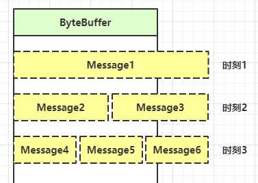
- 一种思路是固定消息长度，数据包大小一样，服务器按预定长度读取，缺点是浪费带宽
- 另一种思路是按分隔符拆分，缺点是效率低
- TLV 格式，即 Type 类型、Length 长度、Value 数据，类型和长度已知的情况下，就可以方便获取消息大小，分配合适的 buffer，缺点是 buffer 需要提前分配，如果内容过大，则影响 server 吞吐量
- Http 1.1 是 TLV 格式
- Http 2.0 是 LTV 格式
sequenceDiagram
participant c1 as 客户端1
participant s as 服务器
participant b1 as ByteBuffer1
participant b2 as ByteBuffer2
c1 ->> s: 发送 01234567890abcdef3333\r
s ->> b1: 第一次 read 存入 01234567890abcdef
s ->> b2: 扩容
b1 ->> b2: 拷贝 01234567890abcdef
s ->> b2: 第二次 read 存入 3333\r
b2 ->> b2: 01234567890abcdef3333\r
服务器端
private static void split(ByteBuffer source) {
source.flip();
for (int i = 0; i < source.limit(); i++) {
// 找到一条完整消息
if (source.get(i) == '\n') {
int length = i + 1 - source.position();
// 把这条完整消息存入新的 ByteBuffer
ByteBuffer target = ByteBuffer.allocate(length);
// 从 source 读，向 target 写
for (int j = 0; j < length; j++) {
target.put(source.get());
}
debugAll(target);
}
}
source.compact(); // 0123456789abcdef position 16 limit 16
}
public static void main(String[] args) throws IOException {
// 1. 创建 selector, 管理多个 channel
Selector selector = Selector.open();
ServerSocketChannel ssc = ServerSocketChannel.open();
ssc.configureBlocking(false);
// 2. 建立 selector 和 channel 的联系（注册）
// SelectionKey 就是将来事件发生后，通过它可以知道事件和哪个channel的事件
SelectionKey sscKey = ssc.register(selector, 0, null);
// key 只关注 accept 事件
sscKey.interestOps(SelectionKey.OP_ACCEPT);
log.debug("sscKey:{}", sscKey);
ssc.bind(new InetSocketAddress(8080));
while (true) {
// 3. select 方法, 没有事件发生，线程阻塞，有事件，线程才会恢复运行
// select 在事件未处理时，它不会阻塞, 事件发生后要么处理，要么取消，不能置之不理
selector.select();
// 4. 处理事件, selectedKeys 内部包含了所有发生的事件
Iterator<SelectionKey> iter = selector.selectedKeys().iterator(); // accept, read
while (iter.hasNext()) {
SelectionKey key = iter.next();
// 处理key 时，要从 selectedKeys 集合中删除，否则下次处理就会有问题
iter.remove();
log.debug("key: {}", key);
// 5. 区分事件类型
if (key.isAcceptable()) { // 如果是 accept
ServerSocketChannel channel = (ServerSocketChannel) key.channel();
SocketChannel sc = channel.accept();
sc.configureBlocking(false);
ByteBuffer buffer = ByteBuffer.allocate(16); // attachment
// 将一个 byteBuffer 作为附件关联到 selectionKey 上
SelectionKey scKey = sc.register(selector, 0, buffer);
scKey.interestOps(SelectionKey.OP_READ);
log.debug("{}", sc);
log.debug("scKey:{}", scKey);
} else if (key.isReadable()) { // 如果是 read
try {
SocketChannel channel = (SocketChannel) key.channel(); // 拿到触发事件的channel
// 获取 selectionKey 上关联的附件
ByteBuffer buffer = (ByteBuffer) key.attachment();
int read = channel.read(buffer); // 如果是正常断开，read 的方法的返回值是 -1
if(read == -1) {
key.cancel();
} else {
split(buffer);
// 需要扩容
if (buffer.position() == buffer.limit()) {
ByteBuffer newBuffer = ByteBuffer.allocate(buffer.capacity() * 2);
buffer.flip();
newBuffer.put(buffer); // 0123456789abcdef3333\n
key.attach(newBuffer);
}
}
} catch (IOException e) {
e.printStackTrace();
key.cancel(); // 因为客户端断开了,因此需要将 key 取消（从 selector 的 keys 集合中真正删除 key）
}
}
}
}
}
客户端
SocketChannel sc = SocketChannel.open();
sc.connect(new InetSocketAddress("localhost", 8080));
SocketAddress address = sc.getLocalAddress();
// sc.write(Charset.defaultCharset().encode("hello\nworld\n"));
sc.write(Charset.defaultCharset().encode("0123\n456789abcdef"));
sc.write(Charset.defaultCharset().encode("0123456789abcdef3333\n"));
System.in.read();
ByteBuffer 大小分配
- 每个 channel 都需要记录可能被切分的消息，因为 ByteBuffer 不能被多个 channel 共同使用，因此需要为每个 channel 维护一个独立的 ByteBuffer
- ByteBuffer 不能太大，比如一个 ByteBuffer 1Mb 的话，要支持百万连接就要 1Tb 内存，因此需要设计大小可变的 ByteBuffer
- 一种思路是首先分配一个较小的 buffer，例如 4k，如果发现数据不够，再分配 8k 的 buffer，将 4k buffer 内容拷贝至 8k buffer，优点是消息连续容易处理，缺点是数据拷贝耗费性能，参考实现 http://tutorials.jenkov.com/java-performance/resizable-array.html
- 另一种思路是用多个数组组成 buffer，一个数组不够，把多出来的内容写入新的数组，与前面的区别是消息存储不连续解析复杂，优点是避免了拷贝引起的性能损耗
4.5 处理 write 事件
一次无法写完例子
- 非阻塞模式下，无法保证把 buffer 中所有数据都写入 channel，因此需要追踪 write 方法的返回值（代表实际写入字节数）
- 用 selector 监听所有 channel 的可写事件，每个 channel 都需要一个 key 来跟踪 buffer，但这样又会导致占用内存过多，就有两阶段策略
- 当消息处理器第一次写入消息时，才将 channel 注册到 selector 上
- selector 检查 channel 上的可写事件，如果所有的数据写完了，就取消 channel 的注册
- 如果不取消，会每次可写均会触发 write 事件
public class WriteServer {
public static void main(String[] args) throws IOException {
ServerSocketChannel ssc = ServerSocketChannel.open();
ssc.configureBlocking(false);
ssc.bind(new InetSocketAddress(8080));
Selector selector = Selector.open();
ssc.register(selector, SelectionKey.OP_ACCEPT);
while(true) {
selector.select();
Iterator<SelectionKey> iter = selector.selectedKeys().iterator();
while (iter.hasNext()) {
SelectionKey key = iter.next();
iter.remove();
if (key.isAcceptable()) {
SocketChannel sc = ssc.accept();
sc.configureBlocking(false);
SelectionKey sckey = sc.register(selector, SelectionKey.OP_READ);
// 1. 向客户端发送内容
StringBuilder sb = new StringBuilder();
for (int i = 0; i < 3000000; i++) {
sb.append("a");
}
ByteBuffer buffer = Charset.defaultCharset().encode(sb.toString());
int write = sc.write(buffer);
// 3. write 表示实际写了多少字节
System.out.println("实际写入字节:" + write);
// 4. 如果有剩余未读字节，才需要关注写事件
if (buffer.hasRemaining()) {
// read 1 write 4
// 在原有关注事件的基础上，多关注 写事件
sckey.interestOps(sckey.interestOps() + SelectionKey.OP_WRITE);
// 把 buffer 作为附件加入 sckey
sckey.attach(buffer);
}
} else if (key.isWritable()) {
ByteBuffer buffer = (ByteBuffer) key.attachment();
SocketChannel sc = (SocketChannel) key.channel();
int write = sc.write(buffer);
System.out.println("实际写入字节:" + write);
if (!buffer.hasRemaining()) { // 写完了
key.interestOps(key.interestOps() - SelectionKey.OP_WRITE);
key.attach(null);
}
}
}
}
}
}
客户端
public class WriteClient {
public static void main(String[] args) throws IOException {
Selector selector = Selector.open();
SocketChannel sc = SocketChannel.open();
sc.configureBlocking(false);
sc.register(selector, SelectionKey.OP_CONNECT | SelectionKey.OP_READ);
sc.connect(new InetSocketAddress("localhost", 8080));
int count = 0;
while (true) {
selector.select();
Iterator<SelectionKey> iter = selector.selectedKeys().iterator();
while (iter.hasNext()) {
SelectionKey key = iter.next();
iter.remove();
if (key.isConnectable()) {
System.out.println(sc.finishConnect());
} else if (key.isReadable()) {
ByteBuffer buffer = ByteBuffer.allocate(1024 * 1024);
count += sc.read(buffer);
buffer.clear();
System.out.println(count);
}
}
}
}
}
💡 write 为何要取消
只要向 channel 发送数据时，socket 缓冲可写，这个事件会频繁触发，因此应当只在 socket 缓冲区写不下时再关注可写事件，数据写完之后再取消关注
4.6 更进一步
💡 利用多线程优化
现在都是多核 cpu，设计时要充分考虑别让 cpu 的力量被白白浪费
前面的代码只有一个选择器，没有充分利用多核 cpu，如何改进呢？
分两组选择器
- 单线程配一个选择器，专门处理 accept 事件
- 创建 cpu 核心数的线程，每个线程配一个选择器，轮流处理 read 事件
public class ChannelDemo7 {
public static void main(String[] args) throws IOException {
new BossEventLoop().register();
}
@Slf4j
static class BossEventLoop implements Runnable {
private Selector boss;
private WorkerEventLoop[] workers;
private volatile boolean start = false;
AtomicInteger index = new AtomicInteger();
public void register() throws IOException {
if (!start) {
ServerSocketChannel ssc = ServerSocketChannel.open();
ssc.bind(new InetSocketAddress(8080));
ssc.configureBlocking(false);
boss = Selector.open();
SelectionKey ssckey = ssc.register(boss, 0, null);
ssckey.interestOps(SelectionKey.OP_ACCEPT);
workers = initEventLoops();
new Thread(this, "boss").start();
log.debug("boss start...");
start = true;
}
}
public WorkerEventLoop[] initEventLoops() {
// EventLoop[] eventLoops = new EventLoop[Runtime.getRuntime().availableProcessors()];
WorkerEventLoop[] workerEventLoops = new WorkerEventLoop[2];
for (int i = 0; i < workerEventLoops.length; i++) {
workerEventLoops[i] = new WorkerEventLoop(i);
}
return workerEventLoops;
}
@Override
public void run() {
while (true) {
try {
boss.select();
Iterator<SelectionKey> iter = boss.selectedKeys().iterator();
while (iter.hasNext()) {
SelectionKey key = iter.next();
iter.remove();
if (key.isAcceptable()) {
ServerSocketChannel c = (ServerSocketChannel) key.channel();
SocketChannel sc = c.accept();
sc.configureBlocking(false);
log.debug("{} connected", sc.getRemoteAddress());
workers[index.getAndIncrement() % workers.length].register(sc);
}
}
} catch (IOException e) {
e.printStackTrace();
}
}
}
}
@Slf4j
static class WorkerEventLoop implements Runnable {
private Selector worker;
private volatile boolean start = false;
private int index;
private final ConcurrentLinkedQueue<Runnable> tasks = new ConcurrentLinkedQueue<>();
public WorkerEventLoop(int index) {
this.index = index;
}
public void register(SocketChannel sc) throws IOException {
if (!start) {
worker = Selector.open();
new Thread(this, "worker-" + index).start();
start = true;
}
tasks.add(() -> {
try {
SelectionKey sckey = sc.register(worker, 0, null);
sckey.interestOps(SelectionKey.OP_READ);
worker.selectNow();
} catch (IOException e) {
e.printStackTrace();
}
});
worker.wakeup();
}
@Override
public void run() {
while (true) {
try {
worker.select();
Runnable task = tasks.poll();
if (task != null) {
task.run();
}
Set<SelectionKey> keys = worker.selectedKeys();
Iterator<SelectionKey> iter = keys.iterator();
while (iter.hasNext()) {
SelectionKey key = iter.next();
if (key.isReadable()) {
SocketChannel sc = (SocketChannel) key.channel();
ByteBuffer buffer = ByteBuffer.allocate(128);
try {
int read = sc.read(buffer);
if (read == -1) {
key.cancel();
sc.close();
} else {
buffer.flip();
log.debug("{} message:", sc.getRemoteAddress());
debugAll(buffer);
}
} catch (IOException e) {
e.printStackTrace();
key.cancel();
sc.close();
}
}
iter.remove();
}
} catch (IOException e) {
e.printStackTrace();
}
}
}
}
}
💡 如何拿到 cpu 个数
- Runtime.getRuntime().availableProcessors() 如果工作在 docker 容器下，因为容器不是物理隔离的，会拿到物理 cpu 个数，而不是容器申请时的个数
- 这个问题直到 jdk 10 才修复，使用 jvm 参数 UseContainerSupport 配置， 默认开启
4.7 UDP
- UDP 是无连接的，client 发送数据不会管 server 是否开启
- server 这边的 receive 方法会将接收到的数据存入 byte buffer，但如果数据报文超过 buffer 大小，多出来的数据会被默默抛弃
首先启动服务器端
public class UdpServer {
public static void main(String[] args) {
try (DatagramChannel channel = DatagramChannel.open()) {
channel.socket().bind(new InetSocketAddress(9999));
System.out.println("waiting...");
ByteBuffer buffer = ByteBuffer.allocate(32);
channel.receive(buffer);
buffer.flip();
debug(buffer);
} catch (IOException e) {
e.printStackTrace();
}
}
}
输出
waiting...
运行客户端
public class UdpClient {
public static void main(String[] args) {
try (DatagramChannel channel = DatagramChannel.open()) {
ByteBuffer buffer = StandardCharsets.UTF_8.encode("hello");
InetSocketAddress address = new InetSocketAddress("localhost", 9999);
channel.send(buffer, address);
} catch (Exception e) {
e.printStackTrace();
}
}
}
接下来服务器端输出
+-------------------------------------------------+
| 0 1 2 3 4 5 6 7 8 9 a b c d e f |
+--------+-------------------------------------------------+----------------+
|00000000| 68 65 6c 6c 6f |hello |
+--------+-------------------------------------------------+----------------+
5. NIO vs BIO
5.1 stream vs channel
- stream 不会自动缓冲数据，channel 会利用系统提供的发送缓冲区、接收缓冲区（更为底层）
- stream 仅支持阻塞 API，channel 同时支持阻塞、非阻塞 API，网络 channel 可配合 selector 实现多路复用
- 二者均为全双工，即读写可以同时进行
5.2 IO 模型
同步阻塞、同步非阻塞、同步多路复用、异步阻塞（没有此情况）、异步非阻塞
- 同步：线程自己去获取结果（一个线程）
- 异步：线程自己不去获取结果，而是由其它线程送结果（至少两个线程）
当调用一次 channel.read 或 stream.read 后，会切换至操作系统内核态来完成真正数据读取，而读取又分为两个阶段，分别为：
- 等待数据阶段
- 复制数据阶段
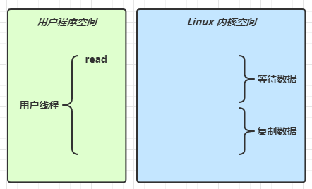
-
阻塞 IO
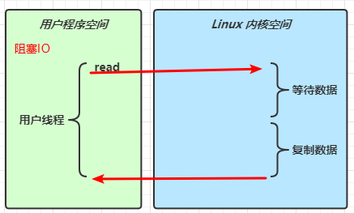
-
非阻塞 IO
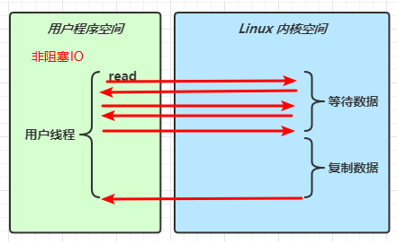
-
多路复用
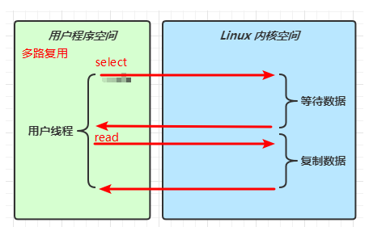
-
信号驱动
-
异步 IO
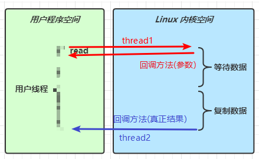
-
阻塞 IO vs 多路复用
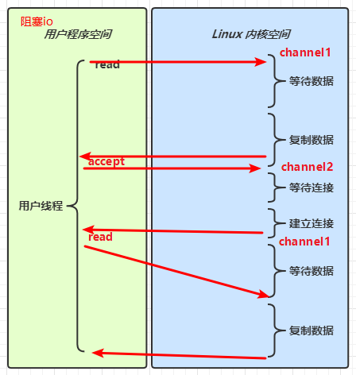
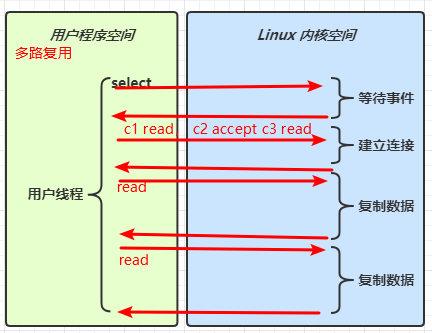
🔖 参考
UNIX 网络编程 - 卷 I
5.3 零拷贝
传统 IO 问题
传统的 IO 将一个文件通过 socket 写出
File f = new File("helloword/data.txt");
RandomAccessFile file = new RandomAccessFile(file, "r");
byte[] buf = new byte[(int)f.length()];
file.read(buf);
Socket socket = ...;
socket.getOutputStream().write(buf);
内部工作流程是这样的：
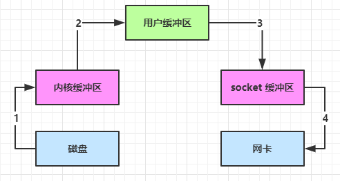
-
java 本身并不具备 IO 读写能力，因此 read 方法调用后，要从 java 程序的用户态切换至内核态，去调用操作系统（Kernel）的读能力，将数据读入内核缓冲区。这期间用户线程阻塞，操作系统使用 DMA（Direct Memory Access）来实现文件读，其间也不会使用 cpu
DMA 也可以理解为硬件单元，用来解放 cpu 完成文件 IO
-
从内核态切换回用户态，将数据从内核缓冲区读入用户缓冲区（即 byte[] buf），这期间 cpu 会参与拷贝，无法利用 DMA
-
调用 write 方法，这时将数据从用户缓冲区（byte[] buf）写入 socket 缓冲区，cpu 会参与拷贝
-
接下来要向网卡写数据，这项能力 java 又不具备，因此又得从用户态切换至内核态，调用操作系统的写能力，使用 DMA 将 socket 缓冲区的数据写入网卡，不会使用 cpu
可以看到中间环节较多，java 的 IO 实际不是物理设备级别的读写，而是缓存的复制，底层的真正读写是操作系统来完成的
- 用户态与内核态的切换发生了 3 次，这个操作比较重量级
- 数据拷贝了共 4 次
NIO 优化
通过 DirectByteBuf
- ByteBuffer.allocate(10) HeapByteBuffer 使用的还是 java 内存
- ByteBuffer.allocateDirect(10) DirectByteBuffer 使用的是操作系统内存
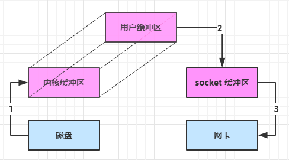
大部分步骤与优化前相同，不再赘述。唯有一点：java 可以使用 DirectByteBuf 将堆外内存映射到 jvm 内存中来直接访问使用
- 这块内存不受 jvm 垃圾回收的影响，因此内存地址固定，有助于 IO 读写
- java 中的 DirectByteBuf 对象仅维护了此内存的虚引用，内存回收分成两步
- DirectByteBuf 对象被垃圾回收，将虚引用加入引用队列
- 通过专门线程访问引用队列，根据虚引用释放堆外内存
- 减少了一次数据拷贝，用户态与内核态的切换次数没有减少
进一步优化（底层采用了 linux 2.1 后提供的 sendFile 方法），java 中对应着两个 channel 调用 transferTo/transferFrom 方法拷贝数据
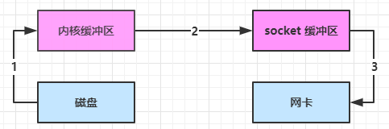
- java 调用 transferTo 方法后，要从 java 程序的用户态切换至内核态，使用 DMA将数据读入内核缓冲区，不会使用 cpu
- 数据从内核缓冲区传输到 socket 缓冲区，cpu 会参与拷贝
- 最后使用 DMA 将 socket 缓冲区的数据写入网卡，不会使用 cpu
可以看到
- 只发生了一次用户态与内核态的切换
- 数据拷贝了 3 次
进一步优化（linux 2.4）
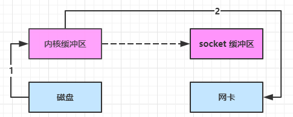
- java 调用 transferTo 方法后，要从 java 程序的用户态切换至内核态，使用 DMA将数据读入内核缓冲区，不会使用 cpu
- 只会将一些 offset 和 length 信息拷入 socket 缓冲区，几乎无消耗
- 使用 DMA 将 内核缓冲区的数据写入网卡，不会使用 cpu
整个过程仅只发生了一次用户态与内核态的切换，数据拷贝了 2 次。所谓的【零拷贝】，并不是真正无拷贝，而是在不会拷贝重复数据到 jvm 内存中，零拷贝的优点有
- 更少的用户态与内核态的切换
- 不利用 cpu 计算，减少 cpu 缓存伪共享
- 零拷贝适合小文件传输
5.3 AIO
AIO 用来解决数据复制阶段的阻塞问题
- 同步意味着，在进行读写操作时，线程需要等待结果，还是相当于闲置
- 异步意味着，在进行读写操作时，线程不必等待结果，而是将来由操作系统来通过回调方式由另外的线程来获得结果
异步模型需要底层操作系统（Kernel）提供支持
- Windows 系统通过 IOCP 实现了真正的异步 IO
- Linux 系统异步 IO 在 2.6 版本引入，但其底层实现还是用多路复用模拟了异步 IO，性能没有优势
文件 AIO
先来看看 AsynchronousFileChannel
@Slf4j
public class AioDemo1 {
public static void main(String[] args) throws IOException {
try{
AsynchronousFileChannel s =
AsynchronousFileChannel.open(
Paths.get("1.txt"), StandardOpenOption.READ);
ByteBuffer buffer = ByteBuffer.allocate(2);
log.debug("begin...");
s.read(buffer, 0, null, new CompletionHandler<Integer, ByteBuffer>() {
@Override
public void completed(Integer result, ByteBuffer attachment) {
log.debug("read completed...{}", result);
buffer.flip();
debug(buffer);
}
@Override
public void failed(Throwable exc, ByteBuffer attachment) {
log.debug("read failed...");
}
});
} catch (IOException e) {
e.printStackTrace();
}
log.debug("do other things...");
System.in.read();
}
}
输出
13:44:56 [DEBUG] [main] c.i.aio.AioDemo1 - begin...
13:44:56 [DEBUG] [main] c.i.aio.AioDemo1 - do other things...
13:44:56 [DEBUG] [Thread-5] c.i.aio.AioDemo1 - read completed...2
+-------------------------------------------------+
| 0 1 2 3 4 5 6 7 8 9 a b c d e f |
+--------+-------------------------------------------------+----------------+
|00000000| 61 0d |a. |
+--------+-------------------------------------------------+----------------+
可以看到
- 响应文件读取成功的是另一个线程 Thread-5
- 主线程并没有 IO 操作阻塞
💡 守护线程
默认文件 AIO 使用的线程都是守护线程，所以最后要执行 System.in.read() 以避免守护线程意外结束
网络 AIO
public class AioServer {
public static void main(String[] args) throws IOException {
AsynchronousServerSocketChannel ssc = AsynchronousServerSocketChannel.open();
ssc.bind(new InetSocketAddress(8080));
ssc.accept(null, new AcceptHandler(ssc));
System.in.read();
}
private static void closeChannel(AsynchronousSocketChannel sc) {
try {
System.out.printf("[%s] %s close\n", Thread.currentThread().getName(), sc.getRemoteAddress());
sc.close();
} catch (IOException e) {
e.printStackTrace();
}
}
private static class ReadHandler implements CompletionHandler<Integer, ByteBuffer> {
private final AsynchronousSocketChannel sc;
public ReadHandler(AsynchronousSocketChannel sc) {
this.sc = sc;
}
@Override
public void completed(Integer result, ByteBuffer attachment) {
try {
if (result == -1) {
closeChannel(sc);
return;
}
System.out.printf("[%s] %s read\n", Thread.currentThread().getName(), sc.getRemoteAddress());
attachment.flip();
System.out.println(Charset.defaultCharset().decode(attachment));
attachment.clear();
// 处理完第一个 read 时，需要再次调用 read 方法来处理下一个 read 事件
sc.read(attachment, attachment, this);
} catch (IOException e) {
e.printStackTrace();
}
}
@Override
public void failed(Throwable exc, ByteBuffer attachment) {
closeChannel(sc);
exc.printStackTrace();
}
}
private static class WriteHandler implements CompletionHandler<Integer, ByteBuffer> {
private final AsynchronousSocketChannel sc;
private WriteHandler(AsynchronousSocketChannel sc) {
this.sc = sc;
}
@Override
public void completed(Integer result, ByteBuffer attachment) {
// 如果作为附件的 buffer 还有内容，需要再次 write 写出剩余内容
if (attachment.hasRemaining()) {
sc.write(attachment);
}
}
@Override
public void failed(Throwable exc, ByteBuffer attachment) {
exc.printStackTrace();
closeChannel(sc);
}
}
private static class AcceptHandler implements CompletionHandler<AsynchronousSocketChannel, Object> {
private final AsynchronousServerSocketChannel ssc;
public AcceptHandler(AsynchronousServerSocketChannel ssc) {
this.ssc = ssc;
}
@Override
public void completed(AsynchronousSocketChannel sc, Object attachment) {
try {
System.out.printf("[%s] %s connected\n", Thread.currentThread().getName(), sc.getRemoteAddress());
} catch (IOException e) {
e.printStackTrace();
}
ByteBuffer buffer = ByteBuffer.allocate(16);
// 读事件由 ReadHandler 处理
sc.read(buffer, buffer, new ReadHandler(sc));
// 写事件由 WriteHandler 处理
sc.write(Charset.defaultCharset().encode("server hello!"), ByteBuffer.allocate(16), new WriteHandler(sc));
// 处理完第一个 accpet 时，需要再次调用 accept 方法来处理下一个 accept 事件
ssc.accept(null, this);
}
@Override
public void failed(Throwable exc, Object attachment) {
exc.printStackTrace();
}
}
}